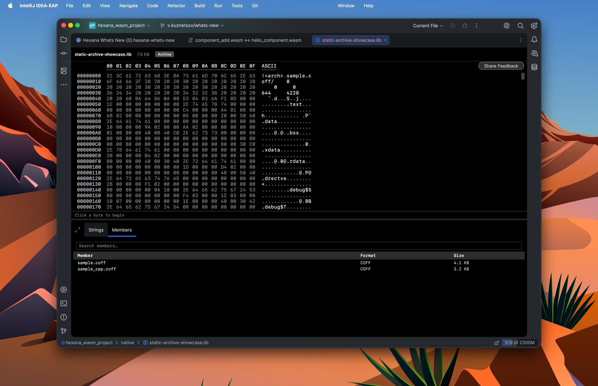

Hexana update
What's New in Hexana 0.12
Hexana 0.12 focuses on WASM and Archives while refining binary inspection inside JetBrains IDEs.
WASM
Compare and inspect Component Model binaries
Component Model binaries now get recursive comparison, virtualized WAT for embedded core modules, and complete nested size attribution.
- Compare WASM With… now accepts Component Model binaries, not only core modules.
- Component Model binaries gain a WAT (virtualized) tab.
- The Top size-profiler tab now breaks a Component Model binary down completely: every nested sub-component and embedded core module is attributed with its correct size and expands to its internal sections and functions, recursively and on demand.

Archives
Inspect static libraries and object members
Unix ar archives and COFF import libraries open as member lists, with object files extracted into the native disassembly views.
- Static-library archives open for inspection:
.a(Unixar, with ELF or Mach-O members) and.lib(Windows COFF import libraries). - Object-file members of a static-library archive disassemble per function in the virtualized (Capstone) view.

Also in 0.12
- Copy, inspect, and navigate imports and exports faster Imports and Exports rows now expose full names, copy actions, WAT navigation, and usage discovery for function imports. The core-module Exports tab gains per-row affordances. The core-module Imports tab gains matching per-row affordances.
- More binary formats and cleaner IDE entry points Hexana adds DEX and ZIP64 coverage, groups IDE actions under a Hexana submenu, and improves Node.js debugging stability. Basic support for Android DEX files (with classes and members). ZIP64 files support.
Release notes
Generated from idea-plugin/CHANGELOG.md. The full changelog remains the source of truth for fixes and compatibility notes.